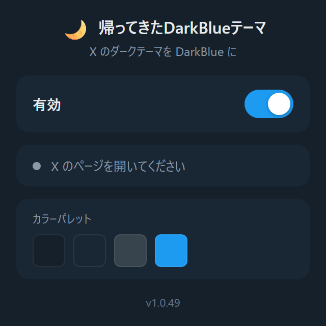

当時の色を再現
記憶の中の色ではなく、旧 Dim テーマの配色値をそのまま使います。
X theme converterChromium / Firefox
X（旧 Twitter）の Lights Out（黒）テーマを、かつて存在した DarkBlue(Dim) の配色に変換します。SPA 遷移や動的に増える投稿でも色が崩れません。

COLOR SPECIFICATION
DarkBlue カラーパレット
X 側で廃止された Dim テーマの配色値を、そのまま現行 UI に当て直しています。
X の表示設定で Lights Out（黒）を選びます。ライトテーマ利用時は拡張機能が何もしません。
インストールした時点で有効（デフォルト ON）。設定は不要です。
ポップアップのトグルで、いつでも元の黒テーマへ戻せます。
FEATURES
X は画面遷移でも再読み込みが起きない SPA です。動的に差し込まれる要素にも追従するため、タイムラインをどれだけ流しても配色が戻りません。
対象と処理の一覧
| 対象 | 変換 | 状態 |
|---|---|---|
| タイムライン背景 | #000 → #15202B | DIM |
| カード / モーダル | #192734 | DIM |
| 動的に追加された投稿 | 追従して変換 | SPA |
| ライトテーマ | 変換しない | SKIP |
SAFE BY DESIGN
theme = lights-out のときだけ介入
no-op on light
ライトテーマや Dim テーマ利用時は一切手を加えない
DESIGN PRINCIPLES
記憶の中の色ではなく、旧 Dim テーマの配色値をそのまま使います。
黒テーマのときだけ動作し、それ以外では何もしません。
配色の適用はローカル完結。閲覧内容を外部に送りません。
INSTALL
Chrome / Edge / Brave などの Chromium 系ブラウザと Firefox 142 以降に対応。MIT License。